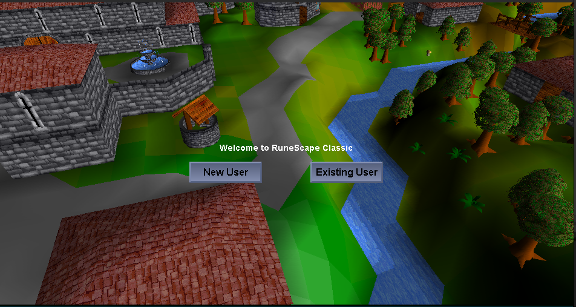

No servers. No setup. No internet required. Just pure solo RuneScape Classic gameplay — preserved and reimagined.


Features
Core
- 100% single-process design — no external DB, server, or internet required
- All core content including all 50 quests
- 18-skill bot system with auto-banking and combat support
- Batched skill actions (woodcutting, mining, cooking, etc.) using a tick-based batch system
- Resizable UI — drag to any window size (desktop) / pinch zoom (mobile)
- Full music — 55 MIDI tracks mapped to game regions
- Dynamic login screen
- Multi-account capable
- XP multiplier configurable 1x–50x
- Hardcore mode — death permanently deletes your save
- Enhanced poison system (6 damage per 15 seconds)
- Context-aware object interactions (pillars, crystals, vines, docks, traps, scaffolding)
Quality of Life
- Bank accessible anywhere via
::bank - Teleport utility via
::tele <area>or coordinates ::stuckto unstick your character- Item swapping in bank via right-click
- Bob's Axes stocks hatchets (Bronze → Rune) and pickaxes (Bronze → Rune)
- Admin account: create user named
rootfor all admin commands
Desktop (v2.7.5)
- Java 17+ required
- Launch via
run.sh(Linux/macOS) orrun.bat(Windows) - Resizable window with dynamic UI scaling
- Build from source with included compile command
Mobile (v2.7.5)
- Android 7.0+ (API 24) — ~6 MB
- Tap = left click, Long press = right click
- Double tap = toggle on-screen keyboard
- Pinch zoom in/out, two-finger drag to rotate camera
- All bot commands work identically to desktop
Bot System
- World bots: Up to 200 autonomous skilling, fighting, trading, login/logout, wilderness patrol, and region-travel bots
- Variable world-bot XP: Autonomous world bots roll 1x, 2x, 3x, or 5x rates for more interesting highscores
- 1x managed bot progression: Bots that train your character stay locked to authentic 1x progression
- Bot lookup: Use
::worldbots lookup <name>to inspect a world bot profile - World bot highscores: Use
::worldbots topfor score, coins, trades, kills, deaths, and banked items - Auto-switch at 99: Bots automatically switch to next bot when skill reaches 99
- Teleport Home: Bots teleport back when exceeding 50 tiles from home
- Progression: Woodcutting → Mining → Fishing → Combat
- Home Locations: Seers (WC), Varrock (Mining), Catherby (Fishing), Lumbridge (FM/Prayer), Ardougne (Herblaw/Thieving), Gnome (Agility)
- Gathering:
::woodcut,::fish,::mine— auto-bank when inventory full - Combat:
::combat,::ranged,::magic— auto-eat food when HP drops - Production:
::cook,::fm,::smith,::fletch,::craft,::herblaw - Support:
::agility,::thieve,::prayer - Manage with
::bot start/stop/pause/status/list
Commands
::bank— open bank anywhere::tele <location>— teleport to named areas or coordinates::stuck— unstick character::pos— show current coordinates::toggleroofs— toggle roof rendering::mapedit— open real-time map editor- Admin (root):
::item,::npc,::object,::set,::addbank,::quest,::find, minimap right-click teleport
Highscores
Representative world-bot highscores. In-game, use ::worldbots top and ::worldbots lookup <name> for your live save.
Static site estimate. Your live save can differ; use ::worldbots status in-game for exact online bots.
No player found. Try a name from the table, like kenyyhy, DeepWild, or RuneRita.
| Rank | Name | Role | Clan | Status | Goal | Level | XP Rate | Score | Coins | Trades | Kills |
|---|---|---|---|---|---|---|---|---|---|---|---|
| 1 | DeepWild | PKer | Wild guard | Online | pk trip | 69 | 5x | 13,940 | 18,200 | 38 | 6 |
| 2 | RuneRita | Skiller | Red capes | Online | build bank | 17 | 3x | 10,850 | 42,500 | 61 | 0 |
| 3 | Risky Rob | PKer | Red capes | Offline | upgrade gear | 58 | 3x | 9,520 | 12,800 | 27 | 4 |
| 4 | OreLord | Skiller | Blue moon | Online | skilling | 14 | 2x | 8,370 | 31,600 | 44 | 0 |
| 5 | CoalCart | Monster hunter | Bank crew | Offline | upgrade gear | 32 | 2x | 7,680 | 9,900 | 31 | 1 |
| 6 | WillowWisp | Skiller | Bank crew | Online | build bank | 11 | 1x | 6,940 | 24,250 | 36 | 0 |
| 7 | EdgePker | PKer | Blue moon | Offline | pk trip | 51 | 2x | 6,710 | 7,450 | 18 | 2 |
| 8 | Lobster Lad | Skiller | Wild guard | Online | skilling | 10 | 1x | 5,880 | 19,800 | 28 | 0 |
| 9 | SeersSaw | Skiller | Oak table | Online | skilling | 21 | 3x | 5,640 | 17,450 | 24 | 0 |
| 10 | VarrockVex | Monster hunter | Red capes | Offline | upgrade gear | 36 | 2x | 5,390 | 8,120 | 19 | 1 |
| 11 | YewBoi | Skiller | Bank crew | Online | build bank | 18 | 2x | 5,260 | 22,840 | 22 | 0 |
| 12 | MageMira | Monster hunter | Blue moon | Online | upgrade gear | 41 | 3x | 5,030 | 6,940 | 15 | 2 |
| 13 | FishFiend | Skiller | Wild guard | Offline | skilling | 16 | 2x | 4,880 | 15,500 | 20 | 0 |
| 14 | ChaosKev | PKer | Wild guard | Online | pk trip | 47 | 1x | 4,720 | 5,700 | 14 | 3 |
| 15 | CatherbyCat | Skiller | Blue moon | Online | build bank | 13 | 1x | 4,510 | 13,920 | 18 | 0 |
| 16 | MineMason | Skiller | Iron bank | Offline | skilling | 19 | 2x | 4,330 | 12,340 | 17 | 0 |
| 17 | NorthGate | PKer | Red capes | Online | pk trip | 44 | 2x | 4,180 | 4,980 | 12 | 2 |
| 18 | BonesBen | Monster hunter | Oak table | Offline | upgrade gear | 29 | 1x | 3,970 | 7,300 | 13 | 1 |
| 19 | FlaxFaye | Skiller | Bank crew | Online | build bank | 12 | 1x | 3,820 | 11,450 | 16 | 0 |
| 20 | SteelSam | Monster hunter | Iron bank | Online | upgrade gear | 34 | 2x | 3,710 | 6,820 | 10 | 1 |
| 21 | WildWendy | PKer | Wild guard | Offline | pk trip | 39 | 3x | 3,520 | 3,950 | 9 | 2 |
| 22 | MapleMax | Skiller | Blue moon | Online | skilling | 15 | 2x | 3,430 | 9,740 | 14 | 0 |
| 23 | GnomeGus | Skiller | Oak table | Offline | skilling | 10 | 1x | 3,220 | 8,300 | 11 | 0 |
| 24 | RimmingtonRay | Skiller | Iron bank | Online | build bank | 11 | 1x | 3,080 | 7,860 | 10 | 0 |
| 25 | AxeAva | Skiller | Red capes | Online | skilling | 13 | 2x | 2,960 | 7,120 | 9 | 0 |
| 26 | HillGiant | Monster hunter | Wild guard | Offline | upgrade gear | 27 | 1x | 2,820 | 5,200 | 8 | 1 |
| 27 | DraynorDan | Skiller | Bank crew | Online | build bank | 9 | 1x | 2,640 | 6,450 | 8 | 0 |
| 28 | PortPete | Skiller | Blue moon | Offline | skilling | 8 | 1x | 2,480 | 5,970 | 7 | 0 |
| 29 | BankBo | Skiller | Bank crew | Online | build bank | 7 | 1x | 2,300 | 5,480 | 7 | 0 |
| 30 | WestWild | PKer | Wild guard | Offline | pk trip | 31 | 1x | 2,120 | 2,900 | 5 | 1 |
Changelog
v2.7.5
- Add autonomous world bots across many regions with lookup, nearby reports, and highscores
- Add transactional Grand Exchange pricing, stock, and market-volume reports
- Support 200 autonomous world bots with variable XP-rate highscore profiles
- Lock managed player-bot XP to 1x progression
v2.7.0
- Fix poison system from Sinister Chest (6 damage per 15 sec)
- Add context-aware NPC default responses
- Enhance object interactions (pillars, crystals, vines, docks, traps, scaffolding)
- Bot auto-switch at 99 and teleport home when too far
- Verified ~90% accurate to original RSC
v2.6.0
- Bot auto-switch at 99: Bots automatically switch to next bot when skill reaches 99
- Teleport Home: Bots teleport back when exceeding 50 tiles from home
- Progression: Woodcutting → Mining → Fishing → Combat
v2.5.0
- Fix TODOs and add sleeping HP restoration
- Add pottery crafting (potter's wheel and pottery oven)
- Fix hardcore retreat death bug
- Move HC badge below bag icon
Installation
Desktop
- Download
Single-RSC-v2.7.5.zipfrom GitHub releases - Extract the zip file
- Ensure Java 17+ is installed:
java -version - Run
run.sh(Linux/macOS) orrun.bat(Windows)
Mobile
- Download
Single-RSC-v2.7.5.apkfrom GitHub releases - Enable "Install from unknown sources" in Settings
- Open the APK file to install
- Launch the app from your app drawer
FAQ
Game won't start
Ensure Java 17+ is installed. Run java -version in your terminal to verify.
Black screen on mobile
Try restarting the app. If the issue persists, clear app data in Settings → Apps → Single-RSC → Clear Data.
How do I enable hardcore mode?
Create a character and look for the "Hardcore" checkbox on the character creation screen.
Can I play with friends?
Not currently. This is a single-player client only.
How do I report a bug?
Open an issue at github.com/kennethyork/Single-RSC/issues.
What makes Single-RSC better than other RSC single-player projects?
- Active development (last update May 2026)
- Mobile APK support
- Built-in bot system with auto-switch and teleport home
- Enhanced combat features (poison system)
- Desktop + Mobile releases
Screenshots
